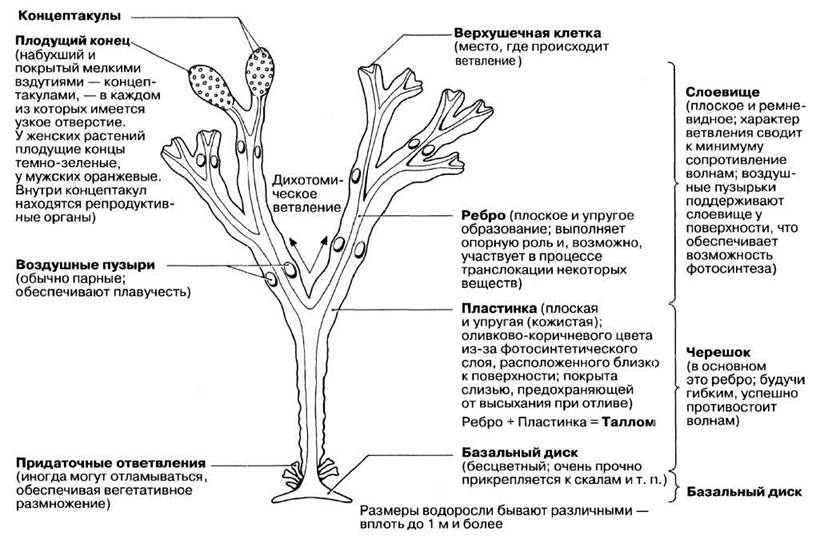

Отдел бурые водоросли (Phaeophyta) насчитывает около 1500 видов. Бурые
водоросли обитают практически только в морях (в пресных водоемах
встречается всего несколько видов). Глубина обитания относительно
небольшая, для большинства видов — 5-15 м, но некоторые виды
распространены до глубины 40-100 м и даже 200 м. Бурые водоросли
входят в экологическую группу бентосных (донных) организмов.
Предшественниками хлоропластов бурых водорослей считаются бактерии,
близкие к Heliobacterium chlorum. Основной фотосинтетический пигмент —
хлорофилл а, вспомогательные — каратиноиды, в том числе бурый фукоксантин
и желтые ксантофиллы. Вспомогательные пигменты бурых водорослей расширяют
спектр поглощаемого ими света в сине-зеленой области. Запасное вещество —
близкий к крахмалу растворимый углевод ламинарии. Слоевище (таллом) —
только многоклеточное. Крупные, иногда многометровые слоевища бурых
водорослей удерживаются на плаву благодаря расположенным в талломе
воздушным пузырькам. У многих представителей бурых водорослей наметилась
дифференцировка тканей. Внутри слоевища проходят сосудистые пучки,
напоминающие флоэму высших растений. Появление сосудистой системы связано
с необходимостью транспорта питательных веществ но многометровому слоевищу
— от верхних, фотосинтезирующих, частей растения к нижним, у которых
условия для фотосинтеза хуже.

Значение бурых водорослей
Бурые водоросли образуют на относительно небольшой глубине целые
«подводные леса», окружающие сплошной стеной побережья всех морей и
океанов обоих полушарий. Эти «подводные леса» служат источником пищи,
укрытием и местом размножения для огромного числа морских обитателей, в
том числе и для многих промысловых рыб. После отмирания водоросли образуют
детрит, являющийся кормом для планктонных организмов. Бурые водоросли
распространены повсеместно, однако самые крупные виды встречаются в морях
умеренных и северных широт.